This tutorial demonstrates the use of unstructured meshes in 3D fluid-structure interaction problems. We combine two single-physics problems, namely
- Large deformations of an elastic 3D bifurcating tube, loaded by an internal pressure
- Flow through a rigid 3D bifurcating tube
for which we have already created unstructured 3D meshes, using Hang Si's open-source mesh generator tetgen .
The problem
The two figures below show a sketch of the problem. An applied pressure drop drives fluid through an elastic, bifurcating tube whose branches have approximately rectangular cross-sections. We solve this problem as a fully-coupled fluid-structure interaction problem in which the fluid provides the traction onto the solid whose deformation changes the fluid domain.


As usual, we formulate the problem in non-dimensional form. For this purpose we non-dimensionalise all lengths on the half-width,  , of the square inflow cross-section, and use the overall pressure drop, 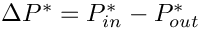 to define the (viscous) velocity scale
, of the square inflow cross-section, and use the overall pressure drop, 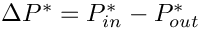 to define the (viscous) velocity scale
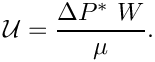
With this choice the Reynolds number becomes
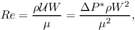
and we choose to drive the flow by a dimensionless pressure drop of 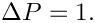 Using this non-dimensionalisation an increase in the Reynolds number may be interpreted as in increase in the applied (dimensional) pressure drop along the vessel. Note that all pressures are defined relative to an external pressure, which we set to zero.
We assume that the solid's constitutive equation is given by oomph-lib's generalised Hookean constitutive law and non-dimensionalise the solid-mechanics stresses and tractions with the Young's modulus 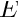.
The FSI interaction parameter 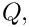 which represents the ratio of the (viscous) fluid stress scale to the reference stress used to non-dimensionalise the solid stresses, is therefore given by
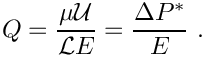
Results
The animation below illustrates the system's behaviour in a parameter study in which we keep the Reynolds number fixed at 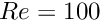 while increasing the FSI parameter  in small increments. The increase in may be interpreted as a reduction in the tube's stiffness and the animation shows clearly how this increases the flow-induced deformation: the upstream end bulges and the downstream end is compressed.
in small increments. The increase in may be interpreted as a reduction in the tube's stiffness and the animation shows clearly how this increases the flow-induced deformation: the upstream end bulges and the downstream end is compressed.
Overview of the implementation
The general procedure described below is essentially the same as that discussed in the two-dimensional unstructured FSI tutorial. The use of an unstructured mesh means that the most convenient node-update strategy for the fluid mesh is to treat it as a pseudo-elastic solid. Nonetheless, the majority of the steps described below are the same as for other fluid-structure-interaction problems.
We reiterate that an important prerequisite for the use of the automatic FSI_functions is that each boundary between fluid and solid meshes must be parametrised by boundary coordinates. Moreover, the boundary-coordinate representations must be the same in both the fluid and solid meshes. This use of a continuous-coordinate representation of the boundaries means that the fluid and solid meshes do not need to match at the boundaries; see the section Fluid and solid meshes do not have to be matching. Unfortunately, the construction of a global surface parametrisation of a general surface is a non-trivial problem. We side-step this problem by making use of the fact that any third-party tetrahedral mesh generator represents domain boundaries using a surface triangulation, or planar surface facets. As the mesh is imported into oomph-lib, each surface facet is treated as a separate boundary and given a unique boundary identifier. The surface parametrisation of each facet is then simply given by local coordinates of the plane; see How the boundary coordinates are generated. A consequence of this approach is that the physical boundaries will consist of several mesh "boundaries", as already discussed in the single-physics problems.
Since the driver code, discussed in detail below, is somewhat lengthy (partly because of the large number of self-tests and diagnostics included), we provide a brief overview of the main steps required to solve this problem:
- Use the unstructured 3D mesh generator
tetgento generate the solid mesh, using the procedure discussed in another tutorial.
- Use the same procedure to generate the fluid mesh, as discussed in the single-physics fluids tutorial. Make sure that the fluid mesh is derived from the
SolidMeshbase class to allow the use of pseudo-elasticity to update the nodal positions in response to the deformation of the domain boundary.
- Ensure that boundary coordinates are set up (consistently) on the FSI interface between the two meshes. For meshes derived from
oomph-lib'sTetgenMeshclass, this may be done by calling the functionTetgenMesh::setup_boundary_coordinates(); see the section How the boundary coordinates are generated for details.
- Attach
FSISolidTractionElementsto the faces of the "bulk" solid elements that are exposed to the fluid flow. These elements will apply the fluid traction to the solid.
- Combine the
FSISolidTractionElementsto a compoundGeomObjectthat provides a continuous representation of the solid's FSI boundary, required by theImposeDisplacementByLagrangeMultiplierElementsdescribed below.
- Attach
ImposeDisplacementByLagrangeMultiplierElementsto the faces of the "bulk" fluid elements that are adjacent to the solid. These elements will employ Lagrange multipliers to deform the pseudo-solid fluid mesh so that its shape remains consistent with the motion of the solid's FSI boundary (as described by the compoundGeomObjectcreated in the previous step).
- Determine the "bulk" fluid elements that are adjacent to the integration points of the
FSISolidTractionElements, using the functionFSI_functions::setup_fluid_load_info_for_solid_elements(...).
In our experience, just as in two-dimensions, the most error-prone part of this procedure is the identification of the mesh boundaries. In particular, if the description of the FSI interface as viewed from the fluid and solid meshes is inconsistent, the automatic matching of the unstructured fluid and solid meshes will not work (see How the boundary coordinates are generated for details). For this reason, the driver code presented below generates a lot of output that can be used to identify and fix such problems. See also the section What can go wrong? at the end of this tutorial.
Problem Parameters
As usual we define the various problem parameters in a global namespace. We define the Reynolds number,  , and the FSI interaction parameter .
, and the FSI interaction parameter .
We provide a pointer to the constitutive equation for the solid. For simplicity, the same constitutive equation will also be used for the (pseudo-)solid elements that determine the deformation of the fluid mesh. In general, of course, a different constitutive equation can (and probably should) be used to control the mesh motion.
Finally, we define the tractions that act on the fluid at the in- and outflow cross-sections. We enforce the non-dimensional pressure drop of 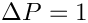 (on the viscous scale) by setting 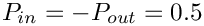, thus pressurising the tube's upstream end while applying an equal and opposite "suction" downstream. (Note that in the
corresponding single-physics fluids problem the actual pressure values were irrelevant because the vessel walls were rigid. In the FSI problem considered here it obviously makes a big difference if the fluid pressure is positive or negative because the external reference pressure is set to zero.)
Creating the meshes
The solid mesh
Following the procedure discussed in the single-physics solid mechanics problem we create the mesh for the elastic tube using multiple inheritance from oomph-lib's TetgenMesh and the SolidMesh base class.
As before, we set the Lagrangian coordinates to the current nodal positions to make the initial configuration stress-free. Next, we identify the elements next to the various boundaries (recall that the domain boundaries are specified in the tetgen *.poly file), and set up the boundary coordinates. Adopting our usual state of continuous paranoia, we document these elements to facilitate debugging; see the section How the boundary coordinates are generated for details.
The fluid mesh
The creation of the fluid mesh follows the same process but uses the mesh created for the
single-physics fluids problem. The use of multiple inheritance from the TetgenMesh and SolidMesh base classes is required to use pseudo-solid node-update techniques to move the fluid nodes in response to changes in the domain boundary. We refer to the fluids tutorial for a discussion of the split_corner_elements flag.
We create boundary coordinates along all mesh boundaries. To ensure that fluid and solid boundary coordinates are aligned properly, we use the flag switch_normal to change the direction of the normal vector for the fluid mesh; see How the boundary coordinates are generated for details.
The driver code
We specify an output directory and instantiate the constitutive equation (oomph-lib's generalisation of Hooke's law), specifying a Poisson ratio of 0.3. As discussed above, this constitutive equation will be used for the "proper" solid mechanics that determines the deformation of the elastic vessel walls, and for the pseudo-solid that determines the deformation of the fluid mesh.
We create the Problem object and output the initial guess for the solution.
Finally, we perform a parameter study in which we compute the solution of the fully-coupled FSI problem for increasing values of the FSI parameter – physically, an increase in can be interpreted as a reduction in the stiffness of the tube walls while keeping the fluid properties and the driving pressure drop constant.
The Problem class
The Problem class has the usual members, with access functions to the fluid and solid meshes, and a post-processing routine.
We provide several helper functions to create the FaceElements that (i) apply the applied traction on the fluid at the in- and outflow cross-sections; (ii) apply the fluid traction onto the solid, and (iii) create the Lagrange multipliers that apply the solid displacement onto the pseudo-solid fluid mesh.
We also provide a helper function that documents the boundary coordinates on the solid mesh.
Finally we provide a large number of additional helper functions that specify the various mesh boundaries (as defined in the tetgen *.poly file) that make up the physical boundaries of interest: the in- and outflow boundaries in the fluid domain; the FSI boundaries of the fluid and solid domains and the boundaries along which the tube wall is held in a fixed position.
The private member data includes pointers to the various meshes and the GeomObject representation of the FSI boundary (created from the FaceElements attached to the solid mesh).
Finally, here are the vectors that store the mesh boundary IDs associated with the various domain boundaries of interest.
The Problem constructor
We start by building the fluid mesh, using the files created by tetgen ; see the discussion in the corresponding single-physics fluids problem.
Next we associated the tetgen boundary IDs with the various boundaries of interest: The inflow boundary is represented by tetgen boundary 0, and the two outflow boundaries have IDs 1 and 2.
The FSI boundary (i.e. the boundary of the fluid mesh that is exposed to the elastic vessel wall) comprises 12 separate tetgen facets which were numbered 3 to 14 in the *.poly that describes the fluid mesh.
Next, we create the solid mesh, using the files created by tetgen ; see the discussion in the corresponding single-physics solids problem.
Following the procedure used for the fluid mesh, we identify the mesh boundaries that make up the (pinned) ends of the tube (boundaries 0, 1 and 2, as defined in the tetgen *.poly file) and the FSI boundary (boundaries 3 to 14 – note that this enumeration matches that in the fluid mesh; see How the boundary coordinates are generated for further details of how the fluid and solid meshes are matched).
We create the fluid traction elements that impose the applied pressures in the in- and outflow cross-sections.
Next, we create the FaceElements that apply the fluid traction to the solid,
and the FaceElements that use Lagrange multipliers to deform the fluid mesh to keep it aligned with the FSI boundary.
We combine the various sub-meshes to a global mesh.
Next, we apply the boundary conditions for the fluid mesh: We impose parallel in- and outflow at the in- and outflow boundaries and apply boundary conditions for the pseudo-elastic deformation of the fluid mesh. Since the in- and outflow cross-sections of the elastic tube are held in place, we pin the position of the fluid nodes in these cross-sections too. To facilitate debugging we document the position of the fluid nodes whose (pseudo-solid) displacements we suppressed.
We apply the no-slip condition on the fluid nodes that are located on the FSI boundary. In addition, we apply boundary conditions for the Lagrange multipliers. We pin the Lagrange multipliers for nodes that are located on the in- and outflow boundaries where the nodal positions are pinned. Recall that the Lagrange multipliers are additional degrees of freedom that are added to the "bulk" degrees of freedom that were originally created by the "bulk" element. The storage for the Lagrange multipliers is added to the Nodes by the FaceElements and the values at which the Lagrange multipliers are stored are found using the function BoundaryNodeBase::index_of_first_value_assigned_by_face_element(). The documentation of the position of the pinned Lagrange multiplier nodes in RESLT/pinned_lagrange_multiplier_nodes.dat is here to facilitate the debugging of the code and is highly recommended.
We complete the build of the fluid elements by specifying the Reynolds number and the constitutive equation for the pseudo-solid equations; recall that we use the same constitutive equation as used for the tube wall.
We apply the "solid" boundary conditions by pinning the positions of the nodes that are located at the ends of the elastic tube, and, just to be on the safe side, document their positions to allow for debugging and sanity-checking.
We complete the build of the solid elements by passing the pointer to the constitutive equation.
Finally, we set up the fluid-structure interaction by determining which "bulk" fluid elements are located next to the FSI traction elements that apply the fluid load to the solid. This must be done separately for each of the mesh boundaries that make up the physical FSI boundary. To facilitate debugging, we document the boundary coordinates along the FSI interface (as seen by the fluid) by opening the Multi_domain_functions::Doc_boundary_coordinate_file stream before calling FSI_functions::setup_fluid_load_info_for_solid_elements(...). If this stream is open, the setup routine writes the Eulerian coordinates of the points on the FSI interface and their intrinsic surface coordinate 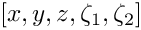 to the specified file. This may be compared against the corresponding data for the solid's view of the FSI interface, documented in doc_solid_boundary_coordinates().
All that's now left to do is to set up the equation numbering scheme and the problem is ready to be solved.
Creating the FSI traction elements
The creation of the FSI traction elements that apply the fluid traction to the solid elements that are adjacent to the FSI boundary follows the usual procedure: We loop over the relevant 3D "bulk" solid elements and attach the FSISolidTractionElements to the appropriate faces.
Next we add the newly-created FaceElement to the mesh of traction elements, specify which boundary of the bulk mesh it is attached to, and pass the FSI interaction parameter to the element.
Creating the Lagrange multiplier elements
The creation of the FaceElements that use Lagrange multipliers to impose the boundary displacement of the pseudo-solid fluid mesh is again fairly straightforward (the use of Lagrange multipliers for the imposition of boundary displacements is explained in another tutorial). The only complication is that we must loop over the different parts of the FSI boundary. In each case we combine the FSISolidTractionElements attached to the solid mesh into a compound GeomObject. Each GeomObject provides a continuous representation of the relevant part of the FSI boundary, parametrised by the boundary coordinate assigned earlier while its shape is determined by the deformation of the 3D solid elements that the FSISolidTractionElements are attached to.
Having represented the boundary by a (compound) GeomObject, we now attach ImposeDisplacementByLagrangeMultiplierElements to the appropriate faces of the "bulk" fluid elements that are adjacent to the FSI interface and add them to their own mesh:
Finally, we pass a pointer to the compound GeomObject that defines the shape of the FSI interface and specify which boundary in the "bulk" fluid mesh the ImposeDisplacementByLagrangeMultiplierElement is attached to.
Attaching the fluid traction elements
The helper function create_fluid_traction_elements() attaches NavierStokesTractionElements to the in- and outflow cross-sections of the fluid mesh and thus imposes the prescribed pressure drop onto the fluid.
Post-processing
The post-processing routine simply executes the output functions for the fluid and solid meshes and documents their mesh boundaries. We also document the FSI traction that the fluid exerts onto the solid.
Sanity check: Documenting the solid boundary coordinates
The function doc_solid_boundary_coordinates() documents the parametrisation of the solid's FSI boundary by writing into a file the solid's counterpart of the data that we created for the fluid side of the FSI interface when setting up the fluid-structure interaction with FSI_functions::setup_fluid_load_info_for_solid_elements(...). The two parametrisations should be consistent; see What can go wrong? for more details. The implementation is straightforward and is suppressed for brevity; see the source code if you want to know how it works.
Comments and Exercises
How the boundary coordinates are generated
The use of pseudo-elasticity for the node update in the fluid mesh makes the solution of FSI problems extremely straightforward. They key feature that allows the "automatic" coupling of the unstructured fluid and solid meshes is the (consistent!) generation of the boundary coordinates 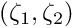 along the FSI interface. For reasons already mentioned, the procedure is more involved than in the equivalent two-dimensional problem. The implementation of this functionality in TetgenMesh::setup_boundary_coordinates(...) exploits the fact that
- Meshes generated by
tetgenare bounded by planar facets, and
- We insist that all facets are given distinct boundary IDs
when defining the domain in the tetgen*.polyfile.
The figure below illustrates the generation of the boundary coordinates within a representative planar facet (shown in cyan) that defines a particular mesh boundary.

Here is how we generate the boundary coordinates:
- We start by attaching
FaceElementsto the appropriate faces of the "bulk" elements that are adjacent to the mesh boundary defined by the facet. TheseFaceElementsprovide a surface triangulation of the boundary. In the sketch above, the surface triangulation is represented by the blue surface mesh.
- We locate the "lower left" and "upper right" nodes within the surface mesh, based on a lexicographical ordering of the nodes' 3D coordinates.
- The straight line from the "lower left" to the "upper right" node (shown by the dashed red line) defines a direction that is co-planar with the facet and therefore allows us to define an in-plane unit vector, 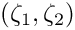, shown in red.
- A second in-plane unit vector, 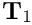 (shown in yellow), can then be constructed by taking the cross-product of and the outer unit normal 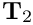. (The outer unit normal can be obtained from any of the adjacent bulk elements.)
- The orthonormal in-plane vectors and define a unique parametrisation of the boundary in terms of the boundary coordinates , if we insist that for every point on the boundary we have
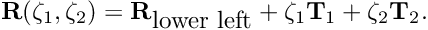
This allows the assignment of boundary coordinates for each of the nodes on this boundary.
- Once this is done we can delete the
FaceElementsthat defined the surface triangulation.
Since the generation of the boundary coordinates by the above procedure only relies on the position of the "lower left" and "upper right" vertices (which are properties of the facet rather than the tetgen mesh) the boundary coordinates are unique, regardless of the actual discretisation generated by tetgen. Furthermore, the boundary coordinates created from the fluid and solid meshes will be consistent provided we reverse the direction of the outer unit normal in one of the meshes. This is exactly what the switch_normal flag in TetgenMesh::setup_boundary_coordinates(...) is for. When generating the boundary coordinates for our problem, we switched the direction of the normal in the fluid mesh; see the section The fluid mesh, above.
Here is an animation of the automatically-generated boundary coordinates along the 12 mesh boundaries that constitute the FSI boundary, when viewed from the fluid and the solid, respectively. In each of the frames the contours indicate the value of
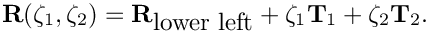 within the respective boundary. Note that the boundary coordinates established in the two meshes match, even though the discretisations do not.

You should explore this procedure yourself as an exercise: For instance you may want to explore what happens if you don't switch the direction of the normal in the fluid mesh when generating the boundary coordinates.
Fluid and solid meshes do not have to be matching
The mesh shown in the problem sketch at the beginning of this tutorial already suggested that the fluid and solid meshes do not have to match across the FSI interface. To illustrate this point more clearly, here is the result of another computation for which we generated a much finer fluid mesh, using
The resulting tetgen *.ele, *.node and *.face files can be used with same driver code.

As an exercise, generate some finer fluid and solid meshes yourself and confirm that they may be used without having to change the driver code.
What can go wrong?
Here are a few things that can (and often do) go wrong in unstructured, three-dimensional FSI problems.
- The facets that define the FSI boundary don't match:
This tends to happen if the*.polyfiles describing the fluid and solid meshes do not use the same facets to describe the FSI interface. While we do not expect the fluid and solid meshes themselves to match, the representation of the FSI interface via facetsmustbe consistent. A simple way to ensure consistency is to use the following procedure:
- Write the
*.polyfile for the fluid mesh. Make sure that each facet is given a separate boundary ID (at least for the facets describing the FSI interface).
- Solve a single-physics fluids problem on this mesh to check the integrity of the mesh – the solution of this problem will also give you some insight into the expected flow field.
- Make a copy of the
*.polyfile for the fluid mesh and modify it to describe the solid mesh, leaving the facets that define the FSI interface unchanged. This automatically ensures that the representation of the FSI boundary from the fluid's and the solid's point of view is consistent.
- Solve a single-physics solids problem on this mesh to check the integrity of the mesh, e.g. by applying some pressure loading on the future FSI boundary – the solution of this problem will also give you some insight into the expected wall deformation.
- Couple the two problems, as shown in this tutorial.
*.polyfiles and the driver code so that it can handle the extended domain considered in the single-physics fluids problem.
- Write the
- An FSI (sub-)boundary is not planar:
In an unstructured mesh, the FSI boundary will usually be represented by a large number of distinct mesh boundaries. The automatic setup of the boundary coordinates on these mesh boundaries requires them to be (individually) planar – at least in the problem's initial configuration. Provided you have followed our advice and associated each of the facets that define the FSI boundary with a different boundary ID, you should not have any problems astetgendoes not allow non-planar facets.
- The solver does not converge:
A large-displacement FSI problem is a highly nonlinear problem and the provision of a good initial guess for the Newton iteration is essential. We tend to proceed as follows:
- Follow the steps outlined above, to study the constituent single-physics problems first. This will already give you some insight into the behaviour of the problem. For instance, the solution of the single-physics Navier-Stokes equations at the desired Reynolds number may have to be computed via a parameter incrementation, starting from Stokes flow. Similarly, the study of the single-physics solid problem will reveal what load increments can be accommodated without causing the Newton iteration to diverge.
- Combine the two single-physics problems using the steps described in this tutorial.
- Switch off the fluid-structure interaction by
- setting the FSI parameter to zero, 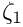
- commenting out the call to
FSI_functions::setup_fluid_load_info_for_solid_elements(...),
- not creating the Lagrange-multiplier elements that enforce the solid displacements onto the fluid mesh.
This completely uncouples the two problems, although they will be solved simultaneously, allowing you to replicate the single-physics parameter studies already performed.
- setting the FSI parameter to zero, 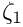
- Now switch on the various interactions, one-by-one, while carefully validating the results at each stage. We tend to proceed as follows:
- Solve the uncoupled problem at zero Reynolds number.
- Increase the Reynolds number in small increments to its target value.
- Re-enable the call to
FSI_functions::setup_fluid_load_info_for_solid_elements(...)and attach the Lagrange multiplier elements but keep 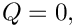 If the solid is not loaded by any forces/tractions other than those arising from the fluid, the solution should not change as the solid remains unloaded.
- Gently increase the value of the FSI parameter, , remembering that it represents the ratio of the typical viscous fluid stresses to the stiffness of the solid. Hence, even relatively small values of tend to lead to relatively large solid displacements. Be gentle!
- Solve the uncoupled problem at zero Reynolds number.
- Follow the steps outlined above, to study the constituent single-physics problems first. This will already give you some insight into the behaviour of the problem. For instance, the solution of the single-physics Navier-Stokes equations at the desired Reynolds number may have to be computed via a parameter incrementation, starting from Stokes flow. Similarly, the study of the single-physics solid problem will reveal what load increments can be accommodated without causing the Newton iteration to diverge.
Source files for this tutorial
- The source files for this tutorial are located in the directory:
demo_drivers/interaction/unstructured_three_d_fsi
- The driver code is:
demo_drivers/interaction/unstructured_three_d_fsi/unstructured_three_d_fsi.cc
PDF file
A pdf version of this document is available.